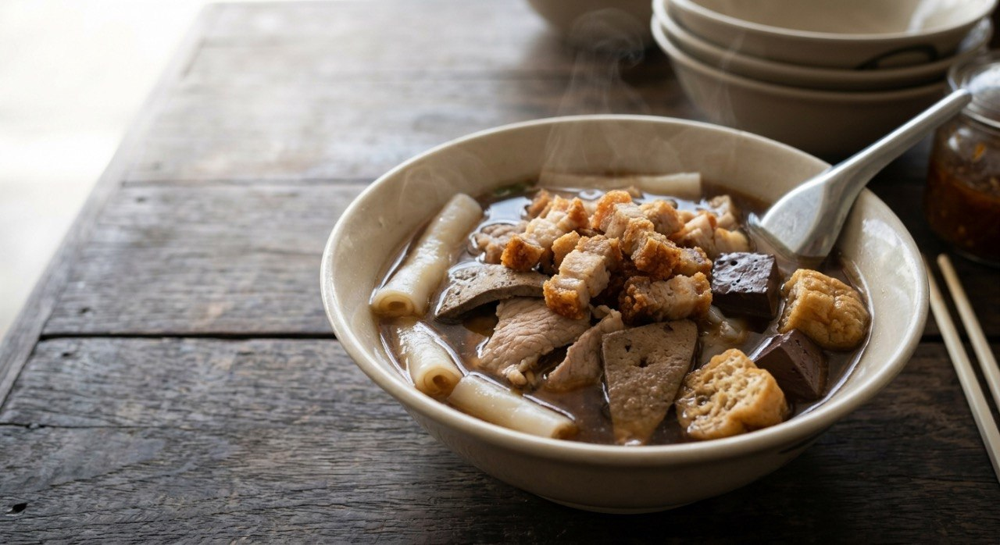

Rolled rice noodle sheets in a dark, pepper-led five-spice broth, loaded with offal, blood cake, fried tofu and a crown of crispy pork.

ก๋วยจั๊บ is the noodle soup built for people who want their breakfast loud. The noodles are เส้นก๋วยจั๊บ — wide rice sheets rolled and cut, soft and slippery in the dark broth. The broth is the point: pork spine bones, garlic and coriander root, and a spice bag heavy with pepper — TrueID's ancient recipe pounds 80 grams of garlic, 40 grams of coriander roots and 10 grams of peppercorns into the สามเกลอ mix that opens the pot, and adds Sichuan pepper on top of the five-spice.
TrueID's recipe also carries the ancient signature step: caramelise the palm sugar first, alone in the pot until it turns, then build the broth on that caramel. That's what gives น้ำข้น — the dark style — its depth of colour and the faint bitter-sweet edge under the spice. Tecnoplus draws the line the shops draw: น้ำข้น is the dark five-spice long stew; น้ำใส is the clear version, same bones, none of the caramel and spice.
Then the cast: pork liver, heart, intestine, lung, blood cake, fried tofu, boiled eggs — and crispy pork. Kapook's home version is candid about the labour: the intestine gets scrubbed with salt and starch, dry-roasted to tame the smell, boiled an hour — and its cooking water, if it smells clean, goes straight back into the broth as the umami trick.
| Thai | English | Amount |
|---|---|---|
| เส้นก๋วยจั๊บ | Rice noodle sheets | 500 g |
| กระดูกเล้ง | Pork spine bones | for the broth |
| น้ำตาลปี๊บ | Palm sugar (caramelised first) | 100 g |
| ซีอิ๊วดำหวาน / ซีอิ๊วขาว | Dark sweet soy / white soy | 5 tbsp / 6 tbsp |
| อบเชย / โป๊ยกั๊ก | Cinnamon / star anise | 30 g / 10 g |
| ผงพะโล้ / ชวงเจีย | Five-spice / Sichuan pepper | 2 tbsp / 1 tbsp |
| กระเทียม / รากผักชี / พริกไทย | Garlic / coriander roots / peppercorns | 80 g / 40 g / 10 g |
| เครื่องใน / เลือดหมู | Liver, heart, lung, intestine / blood cake | to taste |
| เต้าหู้ทอด / ไข่ต้ม | Fried tofu / boiled eggs | to taste |
| หมูกรอบ | Crispy pork | to serve |
| น้ำ | Water | 3.5 L |
Kapook's home version: chicken blood instead of pig blood cake, a starch slurry to thicken, and spleen (ม้าม) in the offal. Tecnoplus's set: 1 kg spine, 500 g belly for the crispy pork, ten cloves of garlic.
Dark or clear. Tecnoplus frames the shop split: น้ำข้น, the dark five-spice long stew, versus น้ำใส, the clear version. TrueID and Kapook's recipes are the dark style. Same dish, two broths.
Caramel or not. TrueID caramelises the palm sugar before anything else — the ancient colour-and-depth step. Kapook and Tecnoplus season with the soys and spice directly, no caramel. The caramel version tastes deeper and slightly bitter-sweet.
The offal cast. TrueID runs liver, heart, lung and intestine; Tecnoplus adds stomach; Kapook's pick is spleen and intestine. Every shop's cast differs — the constant is that liver is timed separately so it stays tender.
The blood. Pig blood cake in TrueID and Tecnoplus; chicken blood in Kapook's home version. Both set in the hot broth at serving.
To thicken or not. Kapook stirs in a starch slurry at the end; TrueID's stew thickens itself over two hours with the lid ajar. The slurry is the home shortcut.
This recipe is translated from the following Thai-language sources. Where they disagree, we've said so.
1. TrueID — "วิธีทำ ก๋วยจั๊บน้ำข้น สูตรโบราณ บอกละเอียดทุกขั้นตอน ทำขายได้" (the recipe used here) — food.trueid.net
2. Tecnoplus — "วิธีทำกวยจั๊บเครื่องแน่น ๆ พร้อมเคล็ดลับน้ำซุปหอมเข้มข้น" (the น้ำข้น vs น้ำใส framing + measured set) — tecnoplusthai.com
3. Kapook — "5 สูตรกวยจั๊บ เมนูเส้นเครื่องแน่นอร่อยระดับเซียน" (the home version: spleen, chicken blood, starch slurry, intestine-water trick) — cooking.kapook.com